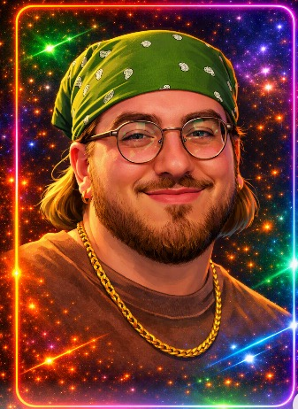

Same concept, wider room: the digest card moves to the top-right corner instead of dead center, since desktop has space to spare and shouldn't cover a face just because it can.

🔇 Clay F.Interaction model: unchanged from mobile — same card, same data, just repositioned for the room it has. Screen share uses the width desktop has to spare for a proper filmstrip (vertical, not a scroll strip) alongside the big shared tile.